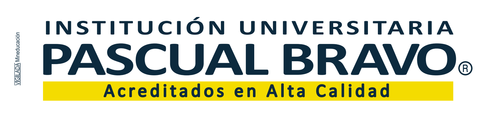

ChatBOT Herramientas pedagógiocas para la inclusión
📥 Descargar HTML
📥 Descargar Word
🌓 Tema
🎨 Paleta de colores
📎 Segundo PDF (opcional)
+ Seleccionar PDF
Ningún archivo seleccionado
📎 Tercer PDF (opcional)
+ Seleccionar PDF
Ningún archivo seleccionado
Preguntas sugeridas
— Elige una pregunta —
Enviar